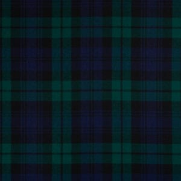

La nostra storia
Ci siamo trovati per caso e, per qualche strano gioco del destino, ci siamo scelti.
In mezzo ci sono state ricerche di granite alla menta, qualche problema con la gravità, idromele in abbondanza ai festival celtici, gare e sfilate di majorettes, cene con gli amici con costumi discutibili, escursioni, musei e rievocazioni storiche, gatti, risate e tanta sana folliaAbbiamo scelto un matrimonio circondati dalla natura, che ci ricordasse la sensazione dei festival che tanto ci piacciono e ci riportasse indietro a tempi più antichi, dove potessimo ripercorrere la nostra storia, iniziare un nuovo capitolo e condividere un buon bicchiere di birra con gli amici.
Il 21 maggio 2027 ci sposiamo. Ci farebbe piacere avervi lì a brindare al suono di birra e Sláinte
Il programma
Le radici
I colori, i simboli, il tartan e tutto ciò che ci accompagnano oggi hanno origini ben più antiche della nostra stessa storia.
Vi lasciamo qualche curiosità per ripercorrerne il significato e condividere con voi le radici di questo viaggio.
Quattro nodi incisi sulle partecipazioni, ricamati sui nastri e intagliati nei segnaposto. Ognuno vuol dire qualcosa.
Nodo della trinità
Tre archi disegnati da un unico filo che non ha né inizio né fine. È il nodo miniato sul Libro di Kells, e il più antico modo irlandese di dire «per sempre».
Fáinne Chladaigh
Due mani che reggono un cuore coronato: amicizia, amore e lealtà. Nasce nel villaggio di pescatori di Claddagh, a Galway. Portato col cuore rivolto all’interno, vuol dire che quel cuore è già preso.
Newgrange, 3200 a.C.
Incisa sulla pietra d’ingresso di Newgrange, nella valle del Boyne: è più vecchia delle piramidi. Tre spirali che girano nello stesso verso — si va sempre avanti.
Snaidhm an ghrá
Quattro anse intrecciate che non si possono separare senza tagliare il filo. È il motivo che avremo inciso dentro le fedi.
Il fuoco di Beltane — e quello dell’handfasting — si accende con nove legni diversi. L’usanza del fuoco acceso con nove legni è documentata nelle Highlands: era il tein-éigin, il «fuoco di necessità», che si riaccendeva da zero quando bisognava scacciare una malattia del bestiame.
La lista precisa dei nove, invece, viene da una filastrocca inglese del Novecento, che a sua volta pesca nell’alfabeto ogham irlandese — quello sì antico, in cui ogni lettera porta il nome di un albero. È un intreccio di epoche diverse, come quasi tutto ciò che chiamiamo celtico.
Beith
Prima lettera dell’alfabeto e primo albero a rispuntare dopo un incendio. Si comincia da qui.
Dair
L’albero dei druidi — la parola stessa è imparentata con «porta». Regge, e basta.
Luis
Si piantava davanti a casa contro il malocchio. Ogni bacca porta una stellina a cinque punte sul fondo: guardatele, la prossima volta.
Sail
Cresce con i piedi nell’acqua e si piega senza spezzarsi. È l’albero della luna e del pianto.
Uath
L’albero delle fate: in Irlanda tagliarne uno porta guai, e più di una strada è stata deviata per non toccarlo. Fiorisce a maggio.
Coll
Nove noccioli crescono attorno al pozzo della saggezza. Il salmone che ne mangia le nocciole diventa il salmone della conoscenza — e chi mangia lui, sa tutto.
Ceirt
L’altro mondo celtico è un’isola di meli. Amore, abbondanza, e una certa idea di paradiso che sa di sidro.
Muin
La lettera che i glossari traducono insieme come vite, collo e astuzia. Profezia e allegria: quella che viene dopo il terzo bicchiere.
Ailm
Sempreverde, e il più alto di tutti: è l’albero che vede lontano. Si mette per ultimo, per la vista lunga.
In gaelico Ruis. È l’albero della Signora: metterlo nel fuoco porta sfortuna a chi l’ha acceso. Se il 21 maggio raccogliete legna per noi, quella lasciatela dov’è.
I romani raccontavano le donne celtiche come un incubo: alte, urlanti, capaci di menare le mani più dei mariti. Era anche un modo per dire quanto fossero barbari quei popoli — un uomo che si fa comandare da una donna, si figuri.
Tolto il filtro, resta comunque qualcosa di vero: in Britannia e in Irlanda le donne governarono, ereditarono, divorziarono e — almeno nei racconti — insegnarono a combattere.
60–61 d.C.
Regina degli Iceni. Alla morte del marito Roma annette il regno, la fa frustare e violenta le sue figlie. Lei solleva mezza Britannia e rade al suolo tre città romane, Londra compresa. Perde l’ultima battaglia e muore poco dopo. Il suo nome viene da boudi, vittoria: si chiamava, letteralmente, la Vittoriosa.
I sec. d.C.
Regina dei Briganti nello stesso momento, e molto più brava a sopravvivere: regnò per decenni in proprio, trattando con Roma da pari. Non le hanno fatto statue perché non ha perso in modo abbastanza memorabile.
Il racconto
La guerra del Táin scoppia perché la regina Medb scopre che al marito manca un toro più bello del suo, e non sopporta di valere un capo di bestiame in meno. Va a prendersene uno con l’esercito. È letteratura, ma dice bene cosa quella cultura trovava verosimile.
Il racconto
La maestra d’armi che vive su un’isola di Scozia. Il più grande eroe irlandese, Cú Chulainn, attraversa il mare per farsi addestrare da lei: tutto quello che sa fare glielo ha insegnato una donna.
La legge
Il diritto irlandese antico prevedeva un matrimonio «di pari conferimento», in cui i due portavano beni uguali e ciascuno dei due poteva scioglierlo. Il divorzio era previsto, e alla fine ognuno riprendeva in proporzione a quanto aveva messo. Non era parità — la capacità giuridica passava quasi sempre da un padre, un marito o un figlio — ma era molto più di quanto avesse una romana.
L’archeologia
Uno studio genetico del 2025 su una necropoli dell’età del ferro nel Dorset ha trovato una lunga continuità in linea materna: erano le donne a restare sulla terra di famiglia, ed erano i mariti a trasferirsi da loro. Non è la guerriera del mito, ed è probabilmente più importante.
In Irlanda i Celti non furono mai conquistati da Roma. È il motivo per cui lì la lingua, le leggi e i motivi decorativi sono arrivati fino a noi quasi senza interruzioni.
In Scozia i Celti sono due popoli che si incontrano: i Pitti, che erano già lì, e i Gaeli arrivati dall’Irlanda in barca.
Questa parte di solito si salta, e invece è la nostra. I Celti in Italia ci sono stati per secoli, e hanno lasciato più di quanto sembri.
Cose che ci sono piaciute troppo per non dirvele.
Il saluto
Centomila volte benvenuti. È quello che trovate in cima a questa pagina: in Irlanda è scritto sugli zerbini e sui cartelli all’ingresso dei paesi.
Il solstizio
Più vecchio di Stonehenge e delle piramidi. Il 21 dicembre, all’alba, un raggio entra da una feritoia sopra la porta, percorre il corridoio e illumina la camera in fondo per una manciata di minuti. Poi si spegne per un anno.
L’emblema
L’Irlanda è l’unico paese al mondo con uno strumento musicale come simbolo di Stato: sui passaporti e sulle monete. Su una certa birra scura c’è la stessa arpa, girata dall’altra parte per non confondersi con quella ufficiale.
Il capodanno
La notte in cui finiva l’estate e il confine fra i due mondi si assottigliava. Gli irlandesi se la sono portata in America, dove è diventata Halloween.
La parola
«Il mese del miele». Agli sposi si dava idromele a sufficienza per un intero ciclo lunare: da lì viene luna di miele. Al brindisi delle 19:30 ne avrete un bicchiere anche voi.
La leggenda
In Irlanda non ce ne sono, ed è vero — ma non li ha cacciati san Patrizio: l’isola si è staccata dal continente prima che arrivassero. La storia è venuta dopo, ed è più bella.
Il brindisi
Si dice alzando il bicchiere e vuol dire salute, niente di più. Si pronuncia più o meno slòn-cia. Imparatelo: servirà.
La musica
La cornamusa irlandese si suona da seduti, col mantice sotto il gomito invece del fiato. Il suono è molto più dolce di quella scozzese — ci accompagnerà all’arrivo degli ospiti.
L’altra metà del tema, quella dei quadri e dei kilt.
L’animale
È l’animale nazionale scozzese, sullo stemma reale dal Quattrocento. Nello stemma è incatenato: un unicorno libero era considerato troppo pericoloso da tenersi in casa.
La festa
In gaelico vuol dire semplicemente «visita». È la serata in cui si balla tutti insieme, in cerchio e a coppie. C’è sempre qualcuno che chiama i passi a voce prima di ogni giro, quindi non serve saperli: serve solo alzarsi.
La coppa
Una tazza bassa con due manici, uno per mano. Si porge con entrambe le mani e si beve in due: agli sposi si offre alla fine della cerimonia, ed è il primo gesto che fanno da sposati.
La parola
«Acqua della vita». Gli inglesi hanno sentito male l’inizio della parola, e ne è uscito whisky.
Il vestito
Il kilt nasce come una coperta lunga cinque metri che si pieghava a terra, si legava in vita e di notte serviva da sacco a pelo. Il kilt corto di oggi è una semplificazione del Settecento.
Il divieto
Dopo Culloden, nel 1746, Londra vietò per legge il tartan e il kilt nelle Highlands. Restarono proibiti per trentasei anni. Il 21 maggio fate pure il contrario.
Il pegno
La spilla scozzese dell’amore: due cuori intrecciati sotto una corona. Si regalava alla promessa sposa — e assomiglia parecchio al claddagh irlandese, che sta due schede più in là.
La geografia
Tante ne conta la Scozia. Abitate, meno di cento. Su alcune ci sono più pecore che persone, e su parecchie non c’è nessuno da secoli.
Il Tartan: Intreccio di Storia e Radici

Le prime testimonianze di tessuti a quadri risalgono a migliaia di anni fa. In Europa, le popolazioni celtiche dell'Età del Ferro padroneggiavano già l'arte della tessitura e della tintura con pigmenti vegetali estratti da piante, bacche e licheni locali.
In origine, i motivi a quadri non identificavano una famiglia o un clan specifico. I colori e le trame dipendevano semplicemente da:
In Scozia il tartan oggi rappresenta l'appartenenza al clan, in Irlanda rappresenta le contee.
Al nostro matrimonio rappresenta la nostra famiglia.
Dress code
I fiori
Info pratiche
Carichiamo le informazioni…
Conferma di presenza